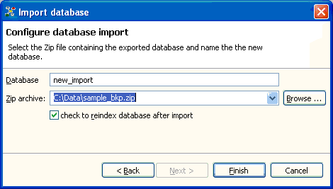

The Relations application stores the entered information in an embedded database. This means, the database lives in the same thread in the memory as the application lives, it is started up when you start the application and shuted down when you close the application.
By default, the data you create is stored in a database named "default_db". However, you can create new embedded databases to use them afterwards. Distinct from external databases you can delete embedded databases you have created e.g. for testing purposes.
To make the data you enter persistent, the embedded databases ("default_db" and the embedded databases you create) save their data in various folders in the file system. These folders are subfolder of a folder named "data" which again is contained in the application's workspace. By default, the applications workspace is a folder named "workspace" that is a subfolder of the folder where you placed the Relations application.
A backup of such an embedded database is simply a zip archive of such a folder created and stored somewhere in your file system or on a backup medium.
You can create such a backup archive using the export wizard Backup data. To do this, start the Export... wizard from the Data menu and select Backup data. The dialog page displayed after allows you to enter the Zip file where the embedded database is backuped. Note: You're not allowed to overwrite an existing backup archive.
Export wizard for data backup.
Restoring the database state is the inverse process: The import wizard overwrites the folder of an embedded database with a backuped copy of this folder. Start the Import... wizard from the Data menu and select Restore data. Select the backup archive containing the database state you want to restore. (Note that the archive has to contain a state of the database you are actually working with.) Most probably you want to synchronize the search index with the restored state of the database, therefore, tick the according checkbox.
Import wizard for data restore.
For that the restored database state becomes effective, the application has to be restarted. Therefore, the application asks you to restart after the restore has been completed.
Instead of restoring the state of an embedded database, you can use the backup of such a database to import data to a different embedded database. This new database might be managed by the same Relations application as well as a Relations application running on a completely different computer. To do this, start the Import... wizard from the Data menu and select Import database.

Import wizard for database import.
Name the new database you want to create and fill with the content of the exportet database. (Note: you can't choose the name of an existing database catalog.) Then select the backup archive containing the exportet database. Most probably you want to create a search index for the imported the database, therefore, tick the according checkbox. After clicking the "Finish" button, the application starts importing, then changes to the imported database and creates the search index if requested.